Round 1Felt or vinyl?
Kept: sheet 2, felt
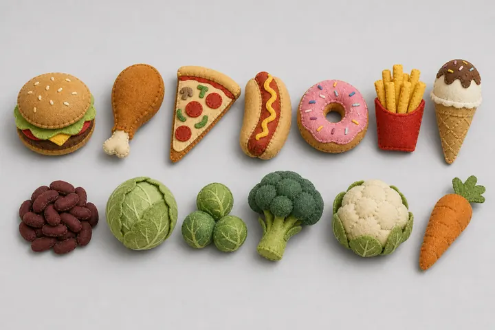
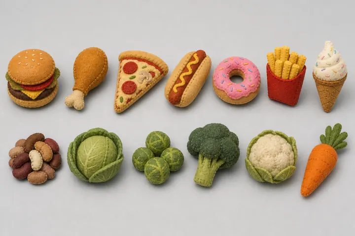
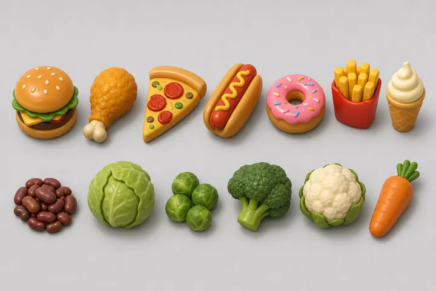
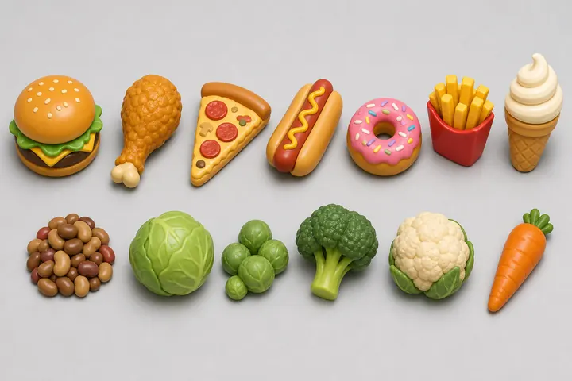
The prompt
The style block, with "single object, centered" left out for a sheet: Stylized toy-town diorama game asset sheet. Chunky, rounded, simple shapes with strong silhouettes, readable from a high top-down camera. Soft pastel palette with a few saturated accents, smooth shading, minimal fine detail. Neutral plain light grey background. No text, no letters, no logos, no brand marks.
The set, from the food tables: A sheet of thirteen separate oversized food items for a game, [1, 2] sewn as soft plush toys from felt with visible stitched seams, like the toy food in a children's play kitchen / [3, 4] made as smooth, glossy vinyl toys with soft rounded edges, like painted toy food. Each item stands alone, evenly spaced in a neat grid, seen from a high three-quarter view from above, all at the same scale and in the same soft even light. Top rows, seven junk foods, warm and golden: a burger, a fried chicken leg, a pizza slice, a hot dog, a donut with pink icing and sprinkles, fries in a plain red paper cup, an ice cream cone. Bottom rows, six vegetables, a little dull and unappetizing: a heap of beans, a cabbage, Brussels sprouts, a broccoli floret, a cauliflower, a carrot. No plates, no packaging brands.
Benny's first sketches came out in stitched felt, so this round asks the bigger question first: should the whole toy town be felt, or glossy vinyl? The human kept 2, felt with a heap of mixed beans (Fri 13 Nov): the vehicles, the toilets and the street props will be felt too.
Round 2One by one
All kept: on to 3D
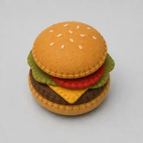
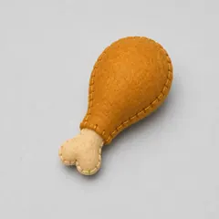
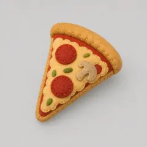
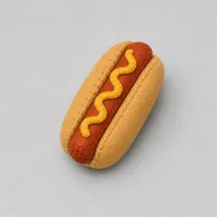
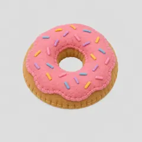
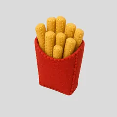
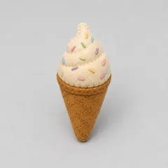
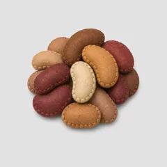
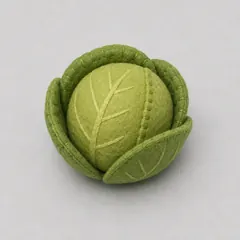
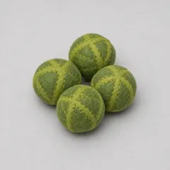
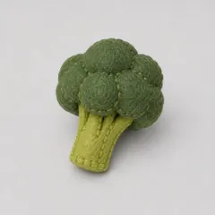
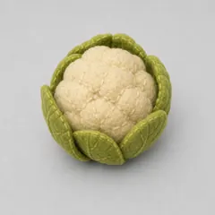
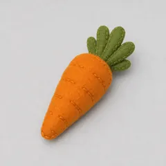
A model is made from one object on its own, so each of the thirteen got an image of its own, in the felt of the kept sheet. The burger went first into 3D: 1,499 triangles and 94 kB once optimized, and in the game it hovers and spins like the greybox shapes did. The other twelve follow once the human has seen it there.

Round 3All thirteen, in 3D
In the game
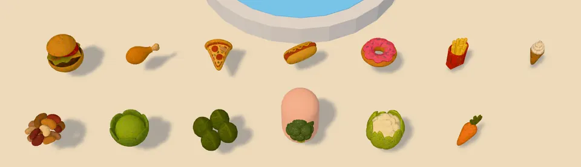
The human saw the burger and said go on, and to drop the golden ring under the food: it read as a halo. Four models came out standing the way their image showed them, seen from three-quarters above (a donut on its edge, a wall of beans), so the game lays them down. Together the thirteen weigh 1.2 MB.